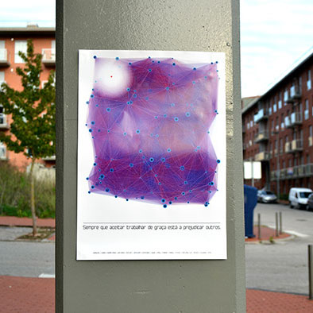
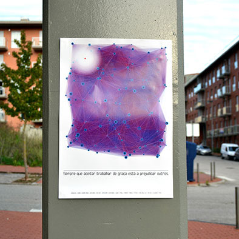

Generated Poster - Design and Responsability
This project was developed in an academic context of "Oficina de Design I", in University of Coimbra. The objective was to produce a poster with the phrase "Whenever you accept to work for free you're harming others", having in mind that an technology would have to be implemented in the process or final product (from computer art to generative, interface and/or interaction design). The concept consists on the interpretation of the networks through the use of abstract elements, in this case by using the circles (workers) conected through lines (connections), in which there's one circle that interrupts this system. To accomplish this, the work was designed in the software "Processing" (Java), which when the application is executed, different posters are generated by changing the abstract elements positions and colors.


 
